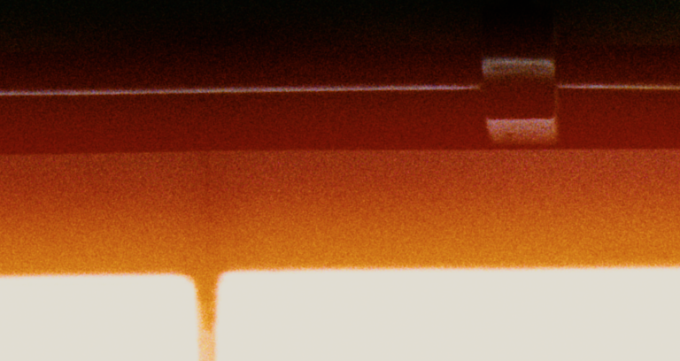
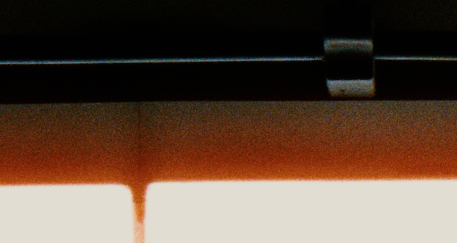
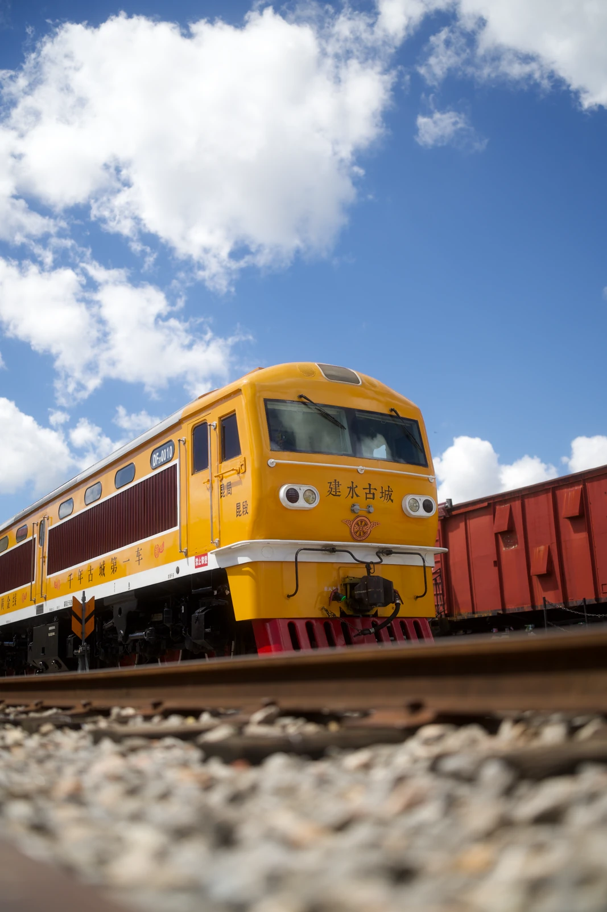

Grain on lotus petals
Watch the pale pink petal at the upper right, then the darker red petal near the center. Compare the texture of the Apple RAW decode with the grain in the finished print.
Kodak Portra 400 · Portra Endura · +0.67 EV
Silverphase
Originals and film prints
Drag the divider to compare a camera original with its film print. The film stock and paper are listed beneath each example.
Grain and highlight edges
Watch the pale pink petal at the upper right, then the darker red petal near the center. Compare the texture of the Apple RAW decode with the grain in the finished print.
Kodak Portra 400 · Portra Endura · +0.67 EV


Follow the dark trim above the white strip. As you move the divider, watch how far the red glow reaches into the shadow.
CineStill 800T · Kodak Vision 2383 · 35 mm grain at 1× on both sides


Move the divider over the red boiler, then compare the detail retained in the dark bodywork.
Fujifilm Eterna 500 · Kodak Vision 2383


Compare contrast across the warm train body and the blue sky in the finished print.
CineStill 400D · Kodak Portra Endura


Drag across the water drop to compare the greens in the leaf and the highlight on the water.
Fujifilm Reala 100 · Fujifilm Crystal Archive Type II


Compare the red wall against the blue sky, then follow the shadow under the eaves.
Fujifilm Pro 160NS · Kodak Supra Endura


Compare the white feathers with the branches behind them as the image changes to black and white.
Ilford HP5 Plus · Ilford Multigrade IV RC · Grade 2


Move along the cloud edges to compare the gold highlights and the foreground silhouette.
Kodak Vision3 250D · Kodak Vision 2383
Film profiles and paper
Five of the six prints use experimental profiles. The sunset uses the standard Kodak Vision3 250D. The 29 experimental profiles in Silverphase originate with MUAStudio’s Fotufilm and were adapted by Negs. Originals are Apple-decoded references. Prints are Silverphase renders.
Profile provenance Full recipes